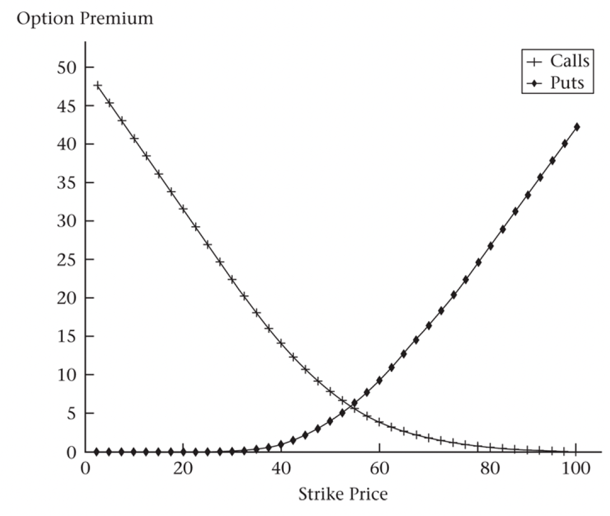

Final review
Put-call parity
\[ S + P = C + \frac{X}{(1 + r)T} \]
\[ \frac{F_0(T)}{(1 + r)T} + P = C + \frac{X}{(1 + r)^T} \]
Maximum and minimum option prices
Call price cannot
- be negative
- exceed stock price
- be less than price implied by put-call parity zero for put price:
\[ S > C_{Amer} \geq C_{Eur} \geq max[0, PV(F_0(T)) - PV(K)] \]
Put price cannot
- be more than the strike price
- be less than price implied by put-call parity using zero for call price:
\[ K > P_{Amer} \geq P_{Eur} \geq max[0, PV(K) - PV(F_0(T))] \]
Different strike prices
\[ K_1 < K_2 < K_3 \]
\[ C(K_1) \geq C(K_2) \geq C(K_3) \]
\[ P(K_1) \leq P(K_2) \leq P(K3) \]
\[ C(K_1) - C(K_2) \geq K_2 - K_1 \]
\[ P(K_1) - P(K_2) \leq K_2 - K_1 \]
\[ \frac{C(K_1) - C(K_2)}{K_2 - K_1} \leq \frac{C(K_2) - C(K_3)}{K_3 - K_2} \]

binomial solution
\[ \Delta = e^{-\delta h}\frac{C_u - C_d}{S(u - d)} \]
\[ B = e^{-rh}\frac{uC_d - dC_u}{u - d} \]
\[ C, P = \Delta S_h e^{\delta h} + e^{rh}B \]
\[ u = e^{(r - \delta)h + \sigma \sqrt{h}} \]
\[ d = e^{(r - \delta)h - \sigma\sqrt{h}} \]
no-arbitrage condition
\[ u > e^{(r - \delta)h} > d \]
risk-neutral pricing
\[ p^* = \frac{e^{(r - \delta)h} - d}{u - d} \]
real probability
\[ p = \frac{e^{\alpha h} - d}{u - d} \]
Black-Scholes
\[ C = Se^{-\delta T}N(d_1) - Ke^{-rT}N(d_2) \]
\[ P = Ke^{-rT}N(-d_2) - Se^{-\delta T}N(-d_1) \]
\[ d_1 = \frac{\ln{S / K} + (r - \delta + \frac{1}{2}\sigma^2)T}{\sigma\sqrt{T}}, d_2 = d_1 - \sigma\sqrt{T} \]
Asian option
The payoff of an asian option is based on the average price over some period of time
- path-dependent
\[ \text{arithmetic average} \geq \text{geometric average} \]
Barrier option
knock-out options
go out of existence
knock-in options
come into existence